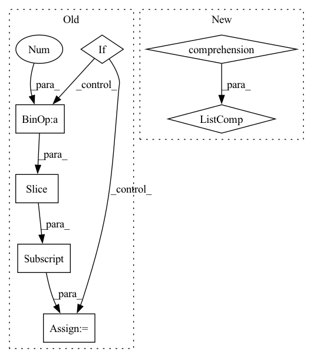

Pattern ID :32742
Before Change
// topological ordering of tasks in graph
// if a specific task to execute is provided, remove non dependent tasks from graph
if self._task_to_execute:
sorted_names = list(topological_sort(task_spec_graph))
target_idx = sorted_names.index(self._task_to_execute)
sorted_names = sorted_names[:target_idx + 1]
else:
sorted_names = list(topological_sort(task_spec_graph))
// convert task_specs to dict, so it can be queried by nameAfter Change
task_spec_graph: DiGraph = self._create_task_spec_graph(task_specs=task_specs)
// topological ordering of tasks in graph
sorted_specs = [task_spec_graph.nodes[task_name]["task"] for task_name in topological_sort(task_spec_graph)]
return sorted_specs
@staticmethod
def _validate_task_combination(task_combination: List[Task]) -> bool:In pattern: SUPERPATTERN
Frequency: 3
Non-data size: 7
Instances Fragment ID: 95128362
Project Name: fluidml/fluidml
Commit Name: d117df27d15ea0262761d6d68099e104d728e24c
Time: 2021-03-04
Author: larshillebrand@icloud.com
File Name: fluidml/flow/flow.py
M Class Name: Flow
N Class Name: Flow
M Method Name: _order_task_specs(2)
N Method Name: _order_task_specs(2)
M Parent Class:
N Parent Class:
M File Name: fluidml/flow/flow.py
N File Name: fluidml/flow/flow.py
M Start Line: 69
M End Line: 85
N Start Line: 141
N End Line: 144
Before Change
devices = jax.local_device_count()
for k, v in params.items():
if v.shape[0] > devices:
params[k] = v[devices * jax.process_index():devices * (jax.process_index() + 1)]
if not ctx.parameters:
for key, param in params.items():
if key in ctx.parameters:After Change
pid = jax.process_index()
with multiprocessing.pool.ThreadPool(ctx.dims.heads) as p:
start = time.time()
paths = [f"{ctx.training.checkpoint_load_path}/{i}_" for i in range(devices * pid, devices * (pid + 1))]
shards = list(p.imap(read_shard, paths))
print(f"read from disk/gcs in {time.time() - start:.06}s")
unsharded = [] Fragment ID: 95128367
Project Name: homebrewnlp/homebrewnlp-jax
Commit Name: 2c20ea47994c09fc78d60b48af99b7af913a682b
Time: 2022-09-04
Author: 39779310+ClashLuke@users.noreply.github.com
File Name: src/utils/checkpoint.py
M Class Name: AnonimousClass
N Class Name: AnonimousClass
M Method Name: read_ckpt(2)
N Method Name: read_ckpt(2)
M Parent Class:
N Parent Class:
M File Name: src/utils/checkpoint.py
N File Name: src/utils/checkpoint.py
M Start Line: 116
M End Line: 139
N Start Line: 114
N End Line: 135
Before Change
self.details = []
for i, name in enumerate(self._names):
if ":" in name: name = name[name.find(":")+1:]
if name not in corps_names[self.skeleton_type]: self.details.append(i)
self.joint_num = self.anim.shape[1]
self.corps = []
self.simplified_name = []After Change
if self.skeleton_type == 0:
self.set_new_root(1)
self.details = [i for i, name in enumerate(self._names) if name not in corps_names[self.skeleton_type]]
self.joint_num = self.anim.shape[1]
self.corps = []
self.simplified_name = []
self.simplify_map = {} Fragment ID: 95128364
Project Name: deepmotionediting/deep-motion-editing
Commit Name: f5d4ffd9868c9dba63251023398f141f1f089109
Time: 2020-12-16
Author: jdbodyfelt@gmail.com
File Name: retargeting/datasets/bvh_parser.py
M Class Name: BVH_file
N Class Name: BVH_file
M Method Name: __init__(5)
N Method Name: __init__(5)
M Parent Class:
N Parent Class:
M File Name: retargeting/datasets/bvh_parser.py
N File Name: retargeting/datasets/bvh_parser.py
M Start Line: 75
M End Line: 132
N Start Line: 75
N End Line: 128